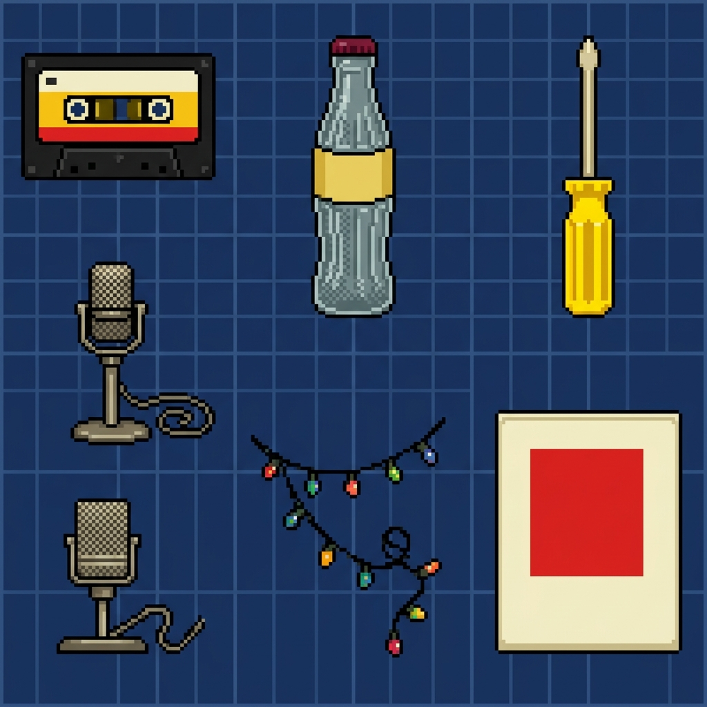

Potvrdiť smer assetov
Prejdeme na technický návrh stavu úloh, interakcií s Radom a testov.
Rimavská Sobota 2015 — fungujúce mesto, ktoré si pamätá československú techniku a kultúrny život.

Emgeton C-60, fľaša Kofoly a azimutový skrutkovač. Každý bude ručne prepísaný na 4–12 px sprite v presnej ZX palete.
Mikrofón a svetelná girlanda sa zobrazia na záverečnom námestí po splnení príslušných úloh.
Prázdna nástenka sa v hre vyplní jednoduchým plagátom z kódového rendereru; nepoužijeme nečitateľný text z generovaného konceptu.
Prejdeme na technický návrh stavu úloh, interakcií s Radom a testov.